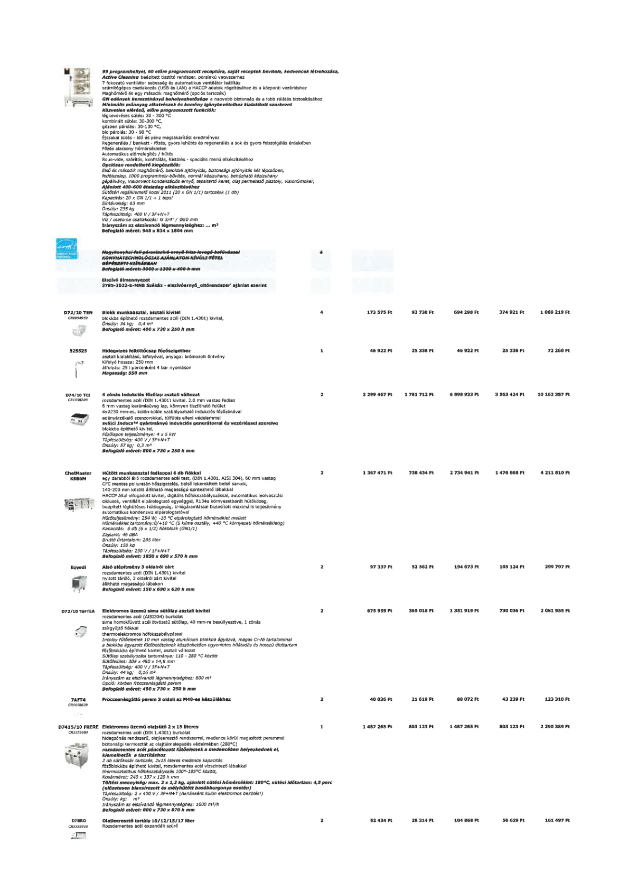

| Tétel | Menny. | Egys. | Anyag e.ár (net HUF) | Díj e.ár (net HUF) | Anyag összesen (net HUF) | Díj összesen (net HUF) | Anyag+Díj összesen (net HUF) |
|---|---|---|---|---|---|---|---|
| D72/10 TEN CR0994959 Blokk munkaasztal, asztali kivitel | 4 | NaN | 173 575 | 93 730 | 694 298 | 374 921 | 1 069 219 |
| 525525 Hidegvizes feltöltőcsap főzőszigethez | 1 | NaN | 4 692 | 25 338 | 46 922 | 25 338 | 72 260 |
| D74/10 TCI CR1358209 4 zónás indukciós főzőlap asztali változat | 2 | NaN | 3 299 467 | 1 781 712 | 6 598 933 | 3 563 424 | 10 162 357 |
| ChefMaster K5B6M Hűtött munkaasztal fedlappal 6 db fiókkal | 2 | NaN | 1 367 471 | 73 434 | 2 734 941 | 1 476 868 | 4 211 810 |
| Egyedi Alsó alépítmény 3 oldalról zárt | 2 | NaN | 97 337 | 52 562 | 194 673 | 105 124 | 299 797 |
| D72/10 TSFTEA Elektromos üzemű sima sütőlap asztali kivitel | 2 | NaN | 675 959 | 365 018 | 1 351 919 | 73 036 | 2 081 955 |
| 7AFT4 CR1658639 Fröccsenésgátló perem 3 oldali az M40-es készülékhez | 2 | NaN | 40 036 | 21 619 | 80 072 | 43 239 | 123 310 |
| D7415/10 FRERE Elektromos üzemű olajsütő 2 x 15 literes | 1 | NaN | 1 487 265 | 803 123 | 1 487 265 | 803 123 | 2 290 389 |
| D7BRO CR1353919 Olajleeresztő tartály 10/12/15/17 liter | 2 | NaN | 52 434 | 28 314 | 104 868 | 56 629 | 161 497 |
